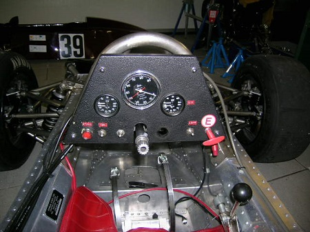
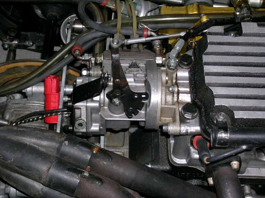

ARGO JM3,Formula 3.
Argo JM3 Formula 3 single seat,historic racing car.Originally sold to Bruno Eichmann for the Swiss F3 series and still equipped with it's original BMW M10 engine.
Argo,the racing department of Anglia Cars was formed by ext Lotus and McLaren designer Jo Marquart.They had significant success in F3,encouraging them to move into larger Formula's,including Sports Car series,again with significant success.
Winning IMSA and WSC designs.
Lighter than the JM1,the JM3 has a narrower monocoque to allow a maximun area for the ground effect side pods.It has had the original tub refreshed,gearbox checked and LSD rebuilt by MSR,along with rebuilt Koni's.
It comes with 2 sets of Dymags and one set of Mike Barnby Dymag pattern split rims.
There is also a pair of alternative side pods,wishbones & jigs,splitter mould,silenced and straight through exhaust,plus a number of other spares.
Engine is the 2ltr Heideggier BMW M10,with Kugelfischer fuel injection.
Eligible for FIA HTP,UK,Europe and US racing series.
Please enquire for more details,any inspection welcome.
Exterior
.jpg)





Interior
Contact 01672 512879 /
07813394167 for further details.